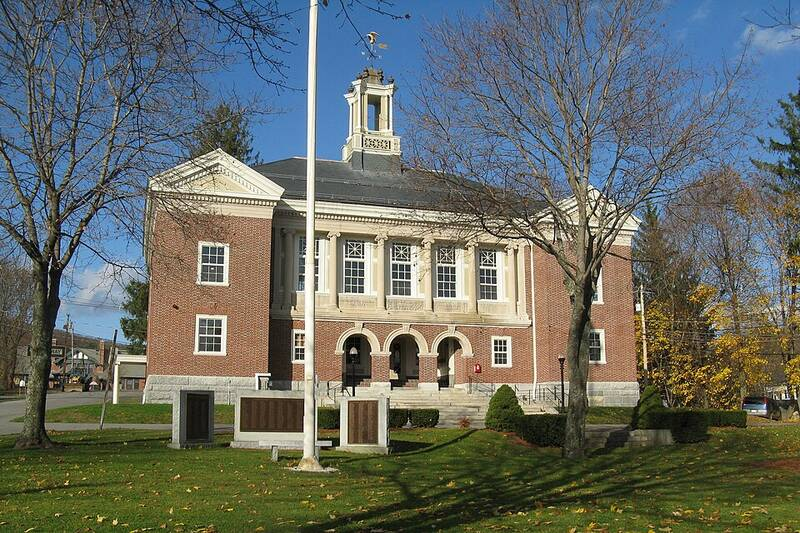

Andreasson abduction claim
South Ashburnham, Massachusetts, 1967

Betty Andreasson said that on January 25, 1967, small beings entered her home here and took her aboard a craft, an account she recalled under hypnosis years later. 1
Open in the interactive Watcher
Related
- Betty Andreasson Person
Sources
- The Andreasson Affair (review) Kirkus Reviews